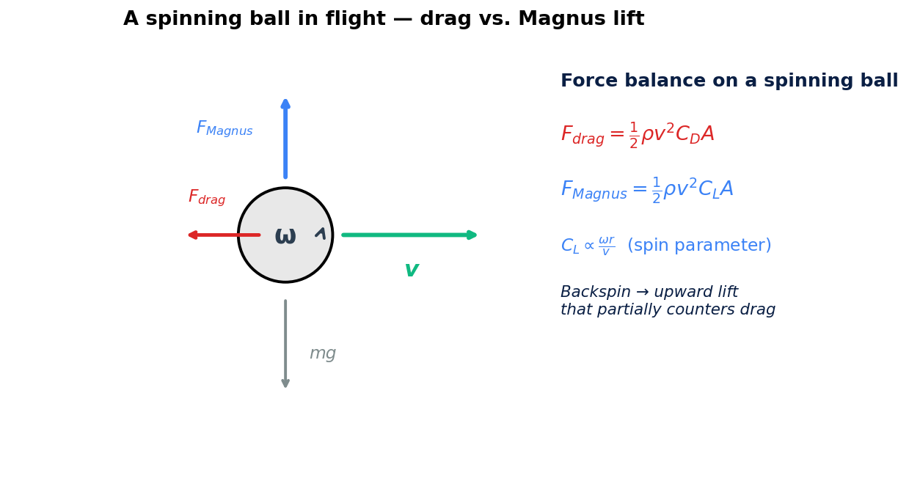
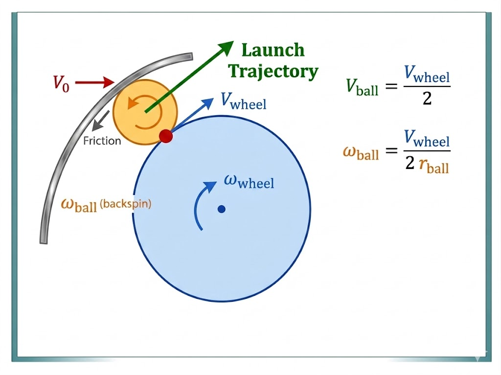
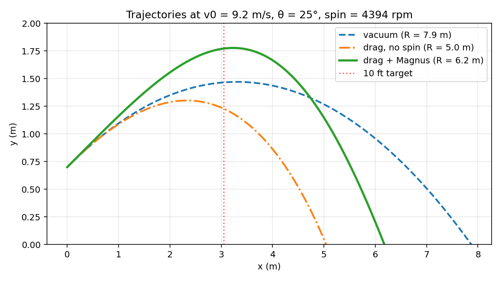
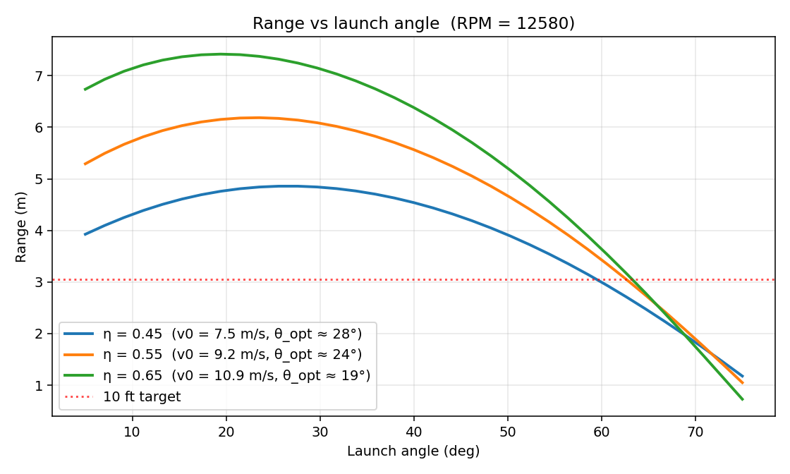
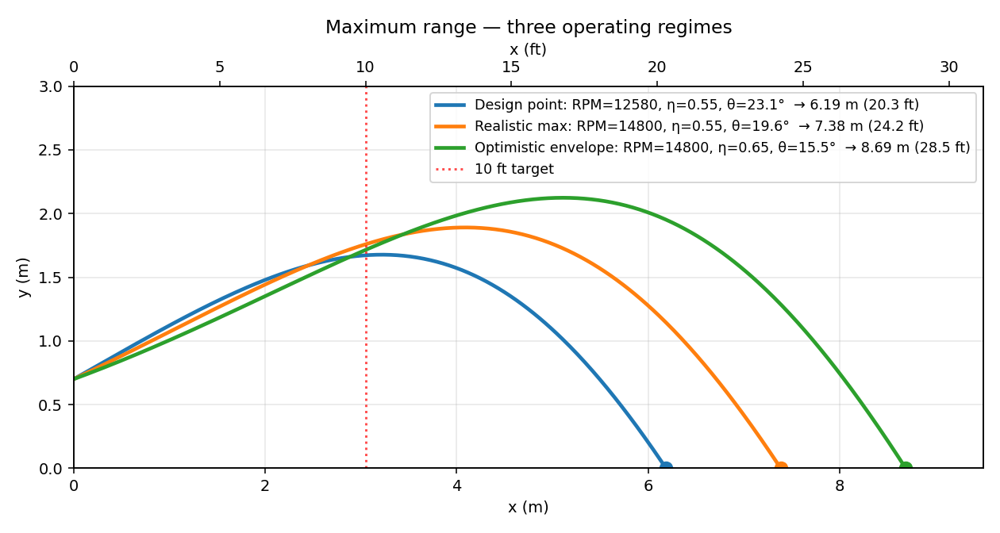
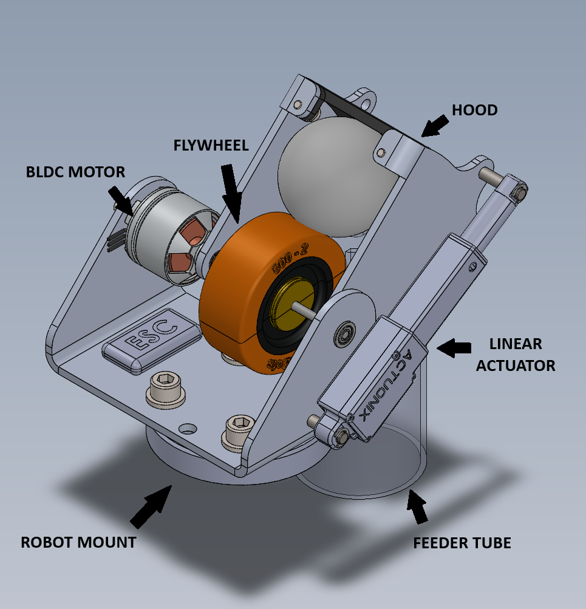
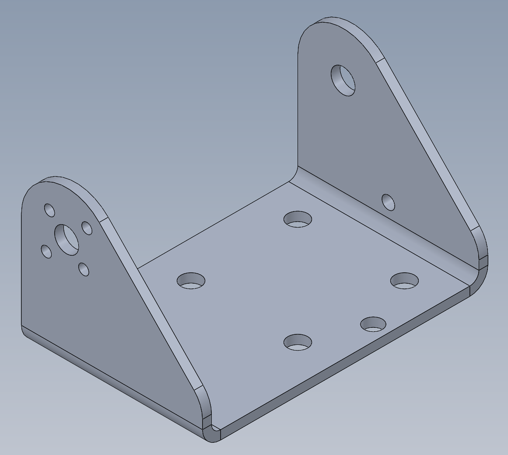
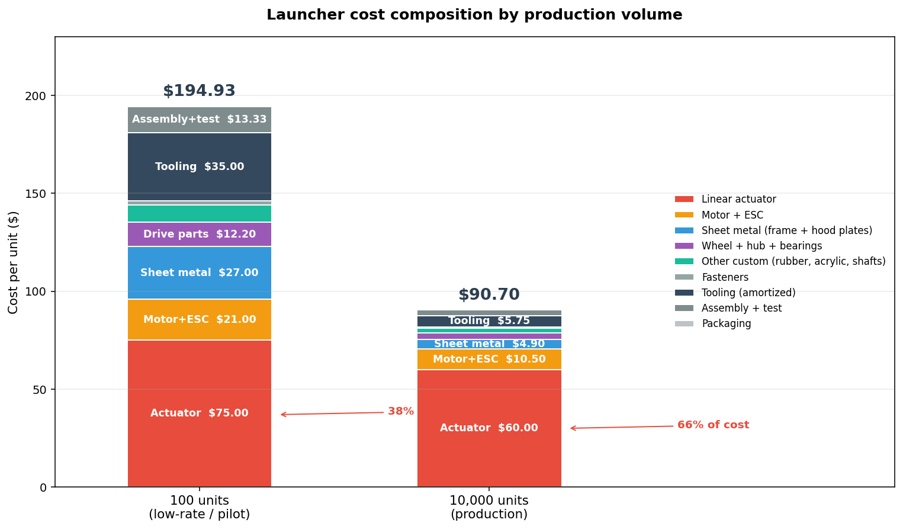
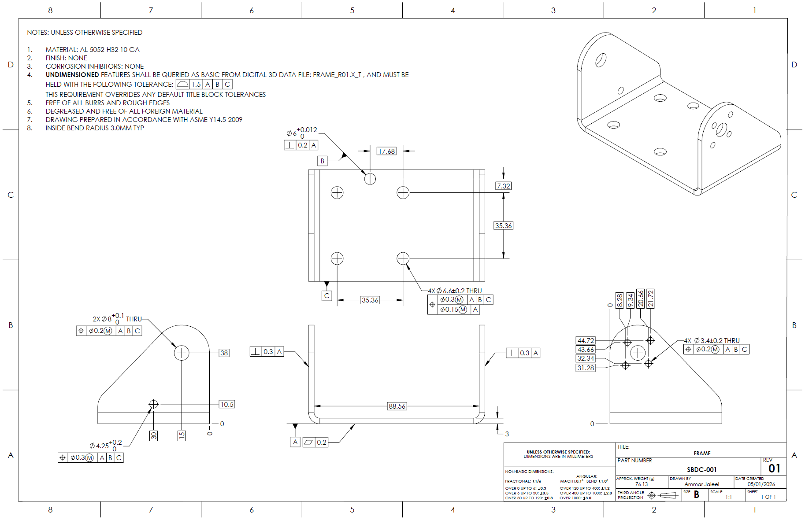

Design Brief
The objective was to design a robot-mountable launcher that propels a ping-pong ball at least 10 feet across a room. The unit must mount to a standard ISO 9409-1-50-4-M6 robot tool flange (4× M6 on 50 mm PCD), leave room for control electronics, and be mass-producible at low cost. The ball-feed actuation mechanism was treated as out of scope, but the feed location was reserved in the layout. Beyond the brief I set my own targets: shoot further than 10 ft, vary the launch angle, support multi-shot operation, hold the BOM under $100 at 10k units, and design from physics rather than guessing geometry.
Concept Evaluation
Six architectures were considered: centrifugal fling using the robot arm itself, a spring or elastic plunger, a CO₂ pneumatic cannon, a solenoid kicker, dual counter-rotating flywheels, and a single flywheel paired with a curved hood. A weighted decision matrix (range, spin, rate of fire, part count, controllability, precision, cost, reliability) ranked the architectures across the criteria the brief actually rewards.
Single flywheel + hood wins on 5 of 8 criteria with a weighted score of 4.375/5, a 0.5 margin over dual flywheel. Ties dual flywheel on spin and rate of fire, beats it on parts count and cost, and crucially gives two independent control parameters: motor RPM (exit speed) and hood angle (trajectory).
Physics-First Design
Most launchers default to a 45° launch angle and a "make it spin somehow" approach. For a 2.7 g, 40 mm ping-pong ball — density of just 84 kg/m³ — those instincts are wrong. Aerodynamics, not gravity, dominate the flight, and the architecture has to be sized to the physics rather than to intuition.
Drag Steals Range. Magnus Gives It Back.
For a heavy projectile in vacuum, range follows R = v² · sin(2θ) / g and peaks at 45°. For a ping-pong ball, both drag and Magnus lift scale with v² but push in different directions. Drag always opposes velocity and shortens the flight; Magnus lift on a backspinning ball points upward, partially canceling gravity and extending flight time.

This reshapes the geometry of the optimal trajectory. With drag dominating and Magnus lift partially restoring lost range, the optimal launch angle drops dramatically — from the textbook 45° down to roughly 25°. Backspin generation became a hard requirement of the architecture, not a nice-to-have.
How the Hood Generates Backspin
A single rotating flywheel alone gives the ball forward velocity but minimal spin. Adding a stationary curved hood above the flywheel creates the boundary conditions that produce strong backspin: the hood's friction holds the top surface of the ball at v=0 while the flywheel surface drags the bottom of the ball at full surface speed. The differential between top and bottom contact velocities is the spin.

The hood does double duty: it generates the backspin via that velocity boundary condition, and the arc of the hood surface where the ball releases also sets the launch angle. One geometric feature, two functions — collapsing what would otherwise be two separate subsystems.
Trajectory Model
To turn the qualitative physics into hard specifications, I built a 2D point-mass projectile model and integrated it forward in time using SciPy's RK45 solver (dt = 5 ms, rtol = 1e-9). The model takes motor RPM (0–14,800), launch angle (0°–75°), slip efficiency η (0.45–0.65), ball properties (2.7 g, 40 mm), and air properties (ρ = 1.225, ν = 1.5e-5) as inputs. Forces include gravity, drag (½ρv²CDA), and Magnus lift (½ρv²CLA). Sanity check: with drag and Magnus disabled, the model matches the closed-form vacuum range to under 0.001% across 5 test cases.

At the design point, vacuum range is 7.9 m. Drag knocks that down to 5.0 m (a 37% loss). Magnus lift on the backspinning ball recovers 24% of that loss, putting actual range at 6.2 m. This recovery validates the single-flywheel-plus-hood architecture against dual flywheel — backspin is a feature, not a side effect.

What the Model Drove
Every important spec on the launcher came out of the trajectory sweep:
The hood stroke was specified at 15°–55° rather than the obvious 0°–60°. The model showed peak range happens around 25° and falls off steeply above 55°, so there's no benefit to spending actuator stroke at extreme angles. The minimum motor RPM to clear 10 ft is just 7,250 — 49% of the EMAX motor's no-load speed. That left massive throttle headroom and kept the door open to a smaller motor on a future cost-down. Slip-efficiency sensitivity showed the worst-case configuration still hits 4.7 m, so the wheel compression spec could be relaxed to favor wheel longevity over peak performance.
Maximum Range Performance
Three operating regimes were modeled to bracket performance:

Solution Architecture
Five major components, eleven unique off-the-shelf parts, six unique custom-fabricated parts.

4S Li-Po, ~14,800 rpm no-load
~50 g, 3 mm shaft, $6 @ 10k
40A urethane on 3 mm hub
$1.20 @ 10k (wheel only)
60–70A urethane liner, 3.4 mm
M2 tool-steel pivot pins
30 mm stroke, 100:1, 12 V
Sets hood angle 15°–55°
4× M6 to robot flange
76.1 g
Key Component Details
Frame — Single Bent Sheet
The frame is a single piece of 3 mm AL 5052-H32 sheet with the ISO 9409 mount pattern integrated directly into the bottom face. At 100 units it's laser-cut and brake-formed; at 10k it transitions to progressive die stamping. That prototype-to-production transition is the largest single cost lever on this part — moving from one-off cutting to a stamping die changes the per-unit economics dramatically.

Motor — Why a Drone BLDC
The EMAX GTII 2212C is a commodity outrunner BLDC sized for FPV drones. The drone industry has driven these to roughly $10 retail in single quantities and ~$6 at 10k, with predictable performance and standard 3 mm shafts that fit commodity bearings and BaneBots hubs. At the operating point the motor pulls about 3 A continuous against a 10 A continuous rating — 51% headroom in reserve.
Flywheel — Buy Now, Build Later
At 100 units the BaneBots T81 with its 40A urethane and set-screw retention works out of the box: zero modifications, two-day lead time, industry-proven compound. At 10k units, the path is to co-mold the rubber directly onto an aluminum hub — eliminating the set screw and snap ring, tightening balance tolerance, and saving roughly $1/unit. The mold tooling runs ~$6k, so breakeven is around 6k units. Below that volume, off-the-shelf wins.
Hood — Two Functions in One Assembly
The hood's two side plates are the same part, just flipped on install — one SKU, one tool setup, half the inventory. The rubber liner is bolted between them and is the designated wear surface; when it degrades, two screws come off and a replacement goes in. The curved profile maintains uniform compression on the ball regardless of speed, so every shot sees the same nip force.
Cost Structure
The BOM scales from $195/unit at 100 units down to $91/unit at 10,000 units — a 2.15× scale factor driven by mold amortization, tooling transitions, and bulk pricing on commodity parts.

At 10k, 66% of unit cost is the linear actuator alone. That single concentration makes the cost-down strategy obvious: replace the off-the-shelf Actuonix unit with a custom assembly built from a NEMA-8 stepper, a Tr-thread lead screw, limit switches, and a driver IC integrated onto the main control PCB. Total custom cost: about $15 versus $60 for the Actuonix. Saves $45/unit and brings total cost from $91 to ~$45. Two secondary levers — replacing the discrete BLDC + ESC with a custom 22 mm BLDC and integrated ESC, and consolidating sheet metal into a single glass-filled-nylon injection-molded shell — recover another $5/unit but require larger production volumes to amortize tooling.
Engineering Calculations
The full design required a calculation list spanning structural, dynamics, bearings/tribology/thermal, and tolerance/integration domains. Most calcs solve cleanly by hand — beam stresses, fastener preload, bearing L10 life, motor torque margin, trajectory dynamics, tolerance stacks. FEA was reserved for three places where closed-form solutions don't capture the geometry: frame modal frequencies (resonance vs. operating RPM), hood plate stiffness under nip pressure, and frame fatigue at the bend radii. Wear life on the hood rubber and flywheel rubber was flagged for empirical qualification rather than analysis — fatigue of urethane in repeated impact contact is hard to model accurately.
GD&T — Frame Drawing
The frame drawing was prepared per ASME Y14.5-2009 with a three-datum scheme: the bottom mount face (A), a dowel-pin hole (B), and the sheet metal thickness face (C). Critical features include the motor mount holes (Ø0.2 MMC positional tolerance — drives rotor concentricity), the hood pivot bore (Ø8 H7, Ø0.3 MMC), and the ISO 9409 4× M6 pattern on 50 mm PCD (Ø0.3 MMC). Default tolerance is ±1.5 mm on undimensioned features, overriding the title block default — non-critical features don't carry inspection cost.

Design for Manufacturing & Assembly
The assembly counts 17 unique part numbers: 7 custom mechanical parts, 4 drive components, 8 bearings/retaining rings, 1 linear actuator subassembly, and 1 acrylic feed tube — plus 24 fasteners and washers across two sizes. Assembly relies on poka-yoke features rather than careful instructions:
The motor bolt pattern is asymmetric (16 × 19 mm rectangle), allowing only two valid orientations and preventing 90° misinstall. The two hood side plates are the same part — flipped on install, so one SKU and one tool setup serves both. Bearing fits use H7 OD on the bearing and H8 hole in the frame — slip fit with controlled depth, no press required. The hood liner is captive between the side plates: it physically can't come loose without removing both plates first. One M6 hole on the ISO 9409 pattern is held to a tighter tolerance and accepts a dowel pin, locating the entire pattern precisely against the robot flange.
What's Next
Total engineering time on this design pass was 13 hours: concept research (1 h), physics derivation and trajectory model (3 h), CAD design and iteration (3.5 h), decision matrix and write-up (1 h), engineering calculations (1 h), BOM and cost analysis (1.5 h), GD&T drawing (1 h), and presentation (1 h). With more time the priorities are: build a hardware prototype to validate the trajectory model and calibrate slip efficiency η experimentally; FEA-driven sizing to trim weight and power; a designed ball-feed mechanism (out of scope here but the obvious next subsystem); and PID-tuned spin-up to reduce energy lost between successive shots.